连续还是离散
"一个新的科学真理取得胜利，并不是通过它的反对者们信服并看到真理的光明，而是通过这些反对者们最终死去，熟悉它的新一代成长起来。"--马克斯·普朗克（Max Planck）
正如开篇所言，AI算法重要的任务是对事物进行分类（离散）与回归（连续），没有分类和回归的思想，就没有AI，而历史上围绕"分类"或"回归"问题诞生的哲学思辨层出不穷。
在西方，亚里士多德是分类的奠基人，他提出了"实体"、"数量"、"性质"、"关系"等十大分类范畴，到了中世纪，康德对人类的认识能力和知识形式进行重新分类，而黑格尔的辩证法揭示了分类并非一成不变，它具有动态性和历史性。
而在东方，古人也很早就开始尝试用一套统一的框架去理解万事万物。以八卦、阴阳、五行等观念为代表的思想传统，体现了中国古代强烈的分类与对应思维；而孔子则更关注人与人、人与社会之间的伦理秩序，通过"仁""礼"等观念来规范人的行为与社会关系。
这些分类的观念和方法，在当时乃至今天都深刻影响着人们认识世界的方式，也是普通人能够直观理解的一类思想工具。
对事物进行分类的能力，是AI前往通用人工智能道路的关键能力之一，但是自然界中的事物并不仅仅是非黑即白的，正如"赤橙黄绿青蓝紫"只是人为对色彩进行了离散的划分，而事实上色彩的变化却是存在着连续性的。
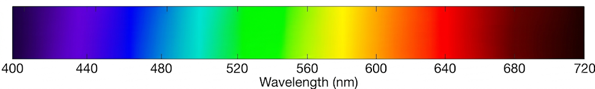
对于世界究竟是连续的还是离散的探讨，成为了困扰科学家们千年难解的课题。
早期的亚里士多德认为，物质和空间是连续且无限可分的，运动也是连续变化的过程；但芝诺提出的"飞矢不动""阿喀琉斯追龟"等悖论，也让人们意识到：一旦涉及"连续""无限可分"和"运动"，问题就会变得异常复杂。
牛顿既是经典力学的奠基人，同时也是一位数学天才，他创立的微积分学说更是为描述连续变化提供了强大的工具，使得连续性观念在物理学中占据了主导地位，莱布尼茨更是提出"自然界无跳跃"的原则。
到了二十世纪，普朗克在解释黑体辐射时提出了能量量子化假设，揭示出能量并不总是连续变化的；爱因斯坦则通过对光电效应的解释，进一步提出了光量子的概念。此后，玻尔又把量子化条件引入原子模型，提出电子会在离散能级之间发生"跃迁"。
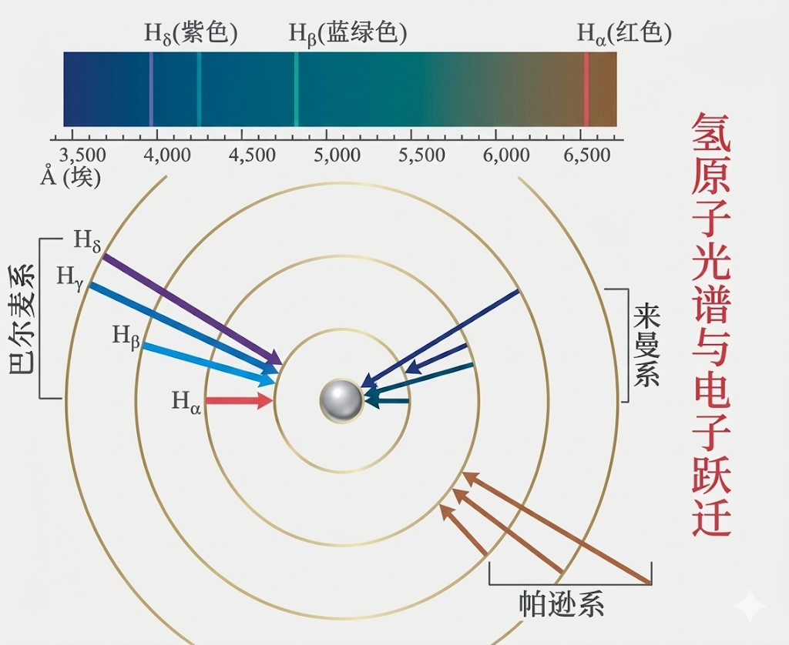
现代科学更倾向于认为，连续与离散并非绝对对立，宏观层面以广义相对论为代表的连续性假设非常有效，而在微观层面，离散的量子化特征则更是事物的根本属性。
在机器学习或深度学习中，分类任务和回归任务的核心区别就在于它们解决的是离散性质的问题还是连续性质的问题。
在分类任务中，模型最终要给出的是离散的类别结果，例如识别一张图片中的动物属于猫、狗、鸡、鸭等哪一类。虽然现实中的类别边界未必总是泾渭分明，但模型最终仍需要作出类别判断。
而在回归任务中，模型输出的结果是具体的数值，比如温度的预测：25.1摄氏度、股价的预测：200元等…预测结果存在模糊的边界，即存在误差，但是我们却总是期望预测值无限逼近于真实值。
分类任务的核心是要寻找到一条可以"决策的边界"，这条边界可以将不同类别的数据点划分开来，模型关心的是数据点属于哪一边，我们后续将要学习的SVM算法则是此类思想的典型代表。
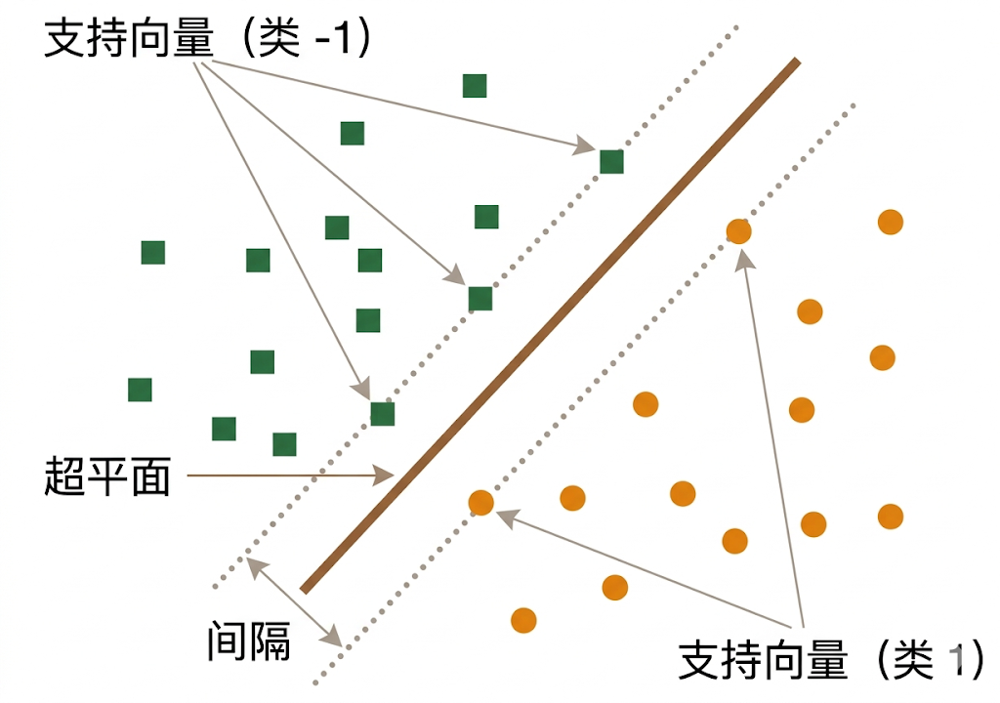
而回归任务的核心是要拟合出一条尽可能接近所有点的线，这根线要反映输入数据和连续输出之间的函数映射关系，这类模型关心的是"预测值"和"真实值"之间的差距有多大，我们后续将要学习到的线性回归模型则是此类思想的典型代表。
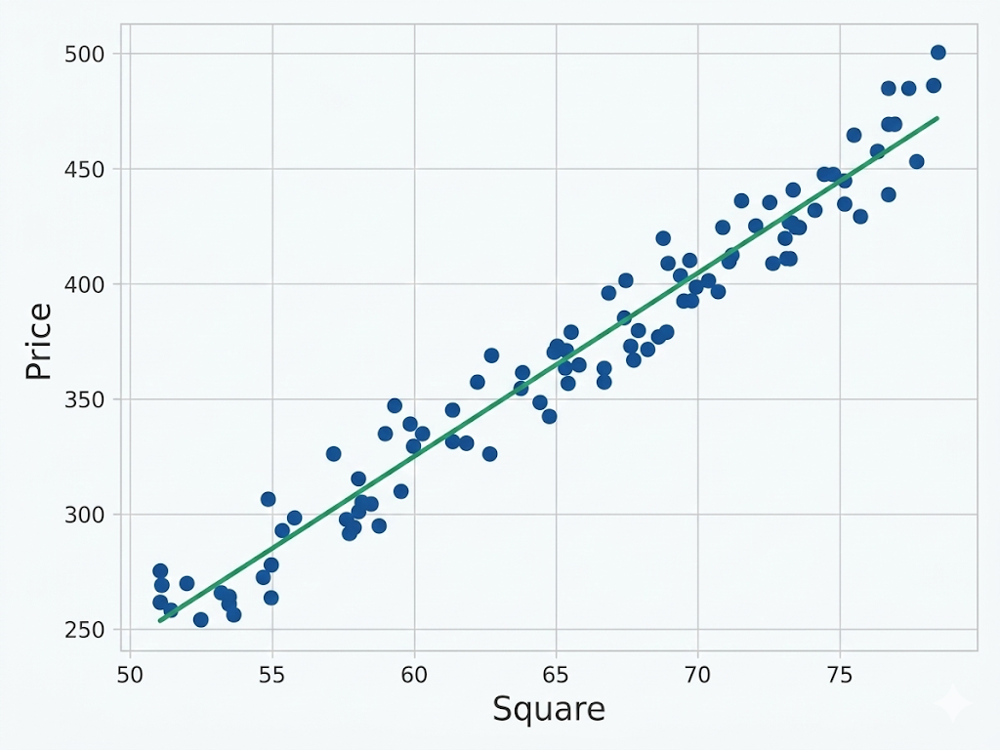
逻辑回归算法名称中虽然含有"回归"二字，但是它却是一个离散型的分类算法，那么为何它的名字中却带有回归呢？
因为这个模型虽然名字里有"回归"二字，但它本质上解决的却是分类问题。它会先对输入特征做一次线性组合，形式上有些类似于我们初中学习过的一元一次函数：$y=kx+b$。不过，这个线性结果本身仍然是任意实数，那么它又是如何被用来完成分类的呢？
这就要提到复合函数了：我们把前面线性函数的输出结果，继续输入到一个新的函数中。这个函数能够把任意实数映射到 $(0,1)$ 区间内，于是它就可以被解释为"样本属于某个类别的概率"。
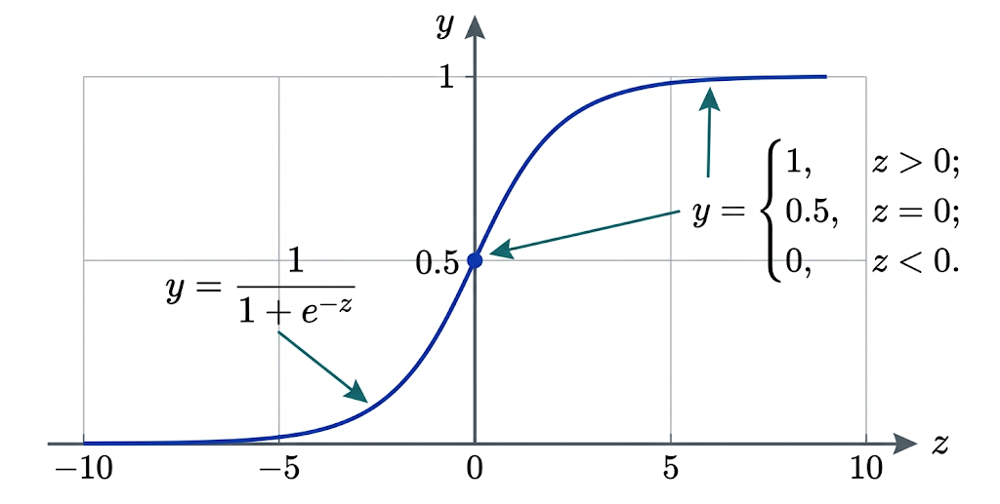
想象有一个超大的二维平面，上面散落了两堆点，一堆红点，一堆蓝点。现在需要找到一条宽宽的"马路"，这条马路的中线就是决策边界，马路的两边上面必须没有任何数据点，而离马路两边最近的点就是支持向量。
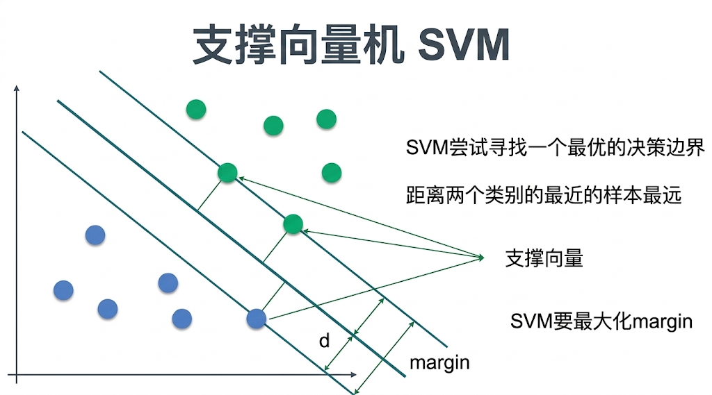
上一课我们已经讲过先验概率、似然和后验概率，也介绍了贝叶斯公式。朴素贝叶斯算法正是建立在贝叶斯公式之上的，它进一步假设：在给定类别的条件下，各个特征之间近似相互独立。这个假设大大简化了计算，因此朴素贝叶斯在文本分类等场景中得到了广泛应用，例如垃圾邮件过滤。
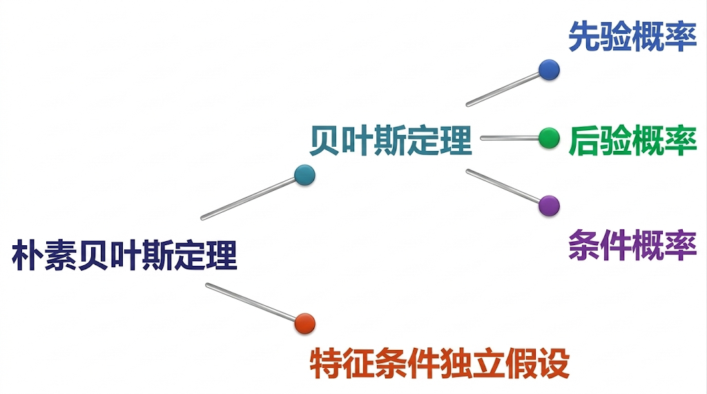
K邻近分类
顾名思义，k个邻近的数据点的分类算法，通过统计新数据点最近的k个邻近的数据点的类别，如果绝大多数属于某类别（比如A类别），则新数据点也判定属于A类别。
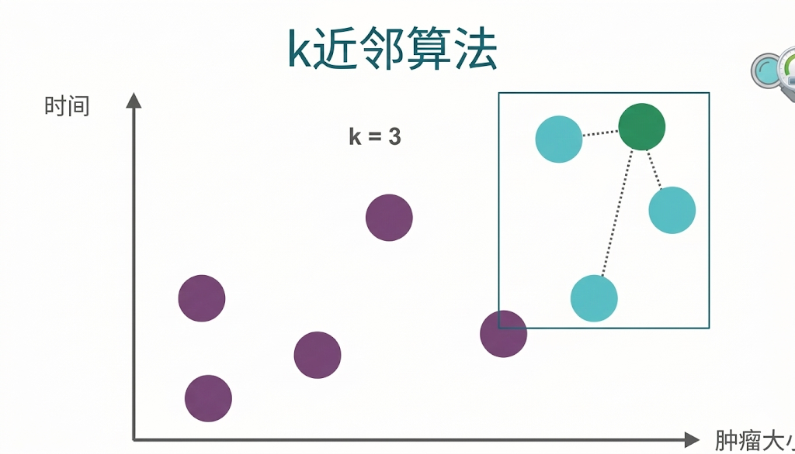
随机森林算法实际上既可以做分类任务，也可以做回归任务。它的原理是通过一系列的决策树来构建一片森林，我们首先来认识一下决策树，相信做过金融风控业务的人对决策树不会陌生，如下图相亲对象见还是不见的决策树：
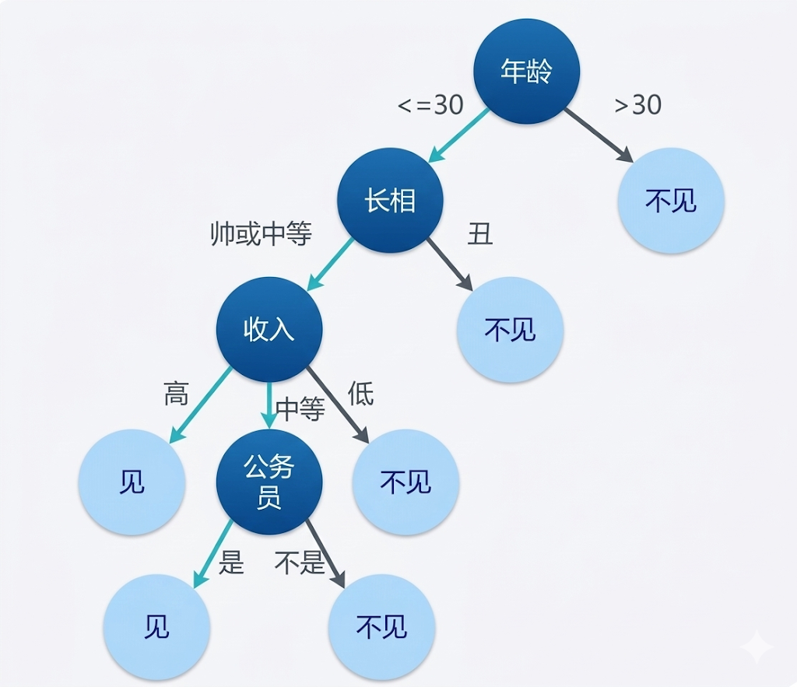
单独一棵决策树虽然直观，但它的判断往往容易受训练数据本身的影响，出现过拟合或不稳定的问题。而如果通过随机抽样数据、随机选择特征的方式来训练多棵不同的决策树，再把它们的结果综合起来，就得到了随机森林。
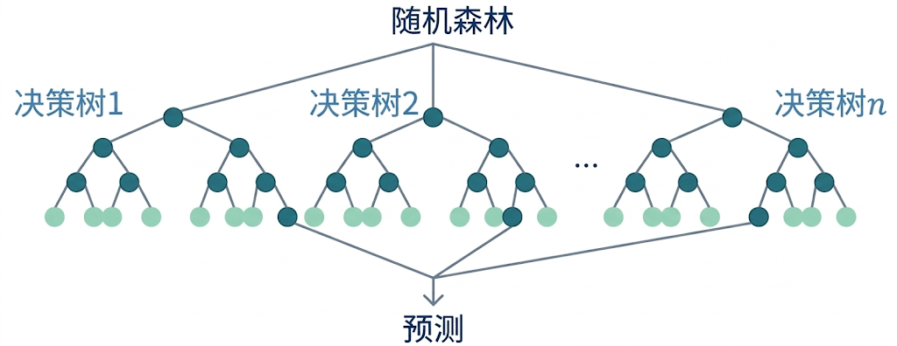
类似于一元一次函数：$y = kx + b$，线性回归模型结构为：$y = w*x + b$，区别在于后者是基于统计数据拟合数据得来，而前者是确定性的映射关系的表达。
线性回归模型的目标，在于找到一条直线，使得所有样本点在纵轴方向上的预测误差平方和尽可能小，这就是最小二乘法的核心思想。

当数据的关系不再是线性回归（直线）关系，而是曲线的时候，我们要通过什么模型来拟合这种关系？
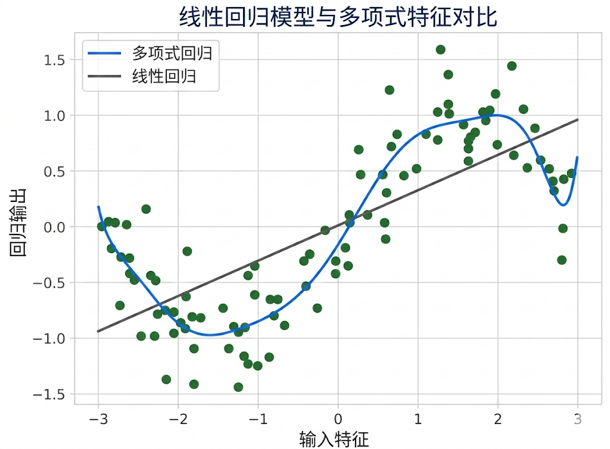
根据中学数学知识，函数的最高次数会影响图像所能呈现出的形状复杂度：一次函数是直线，二次函数常见为抛物线，三次函数则可能出现更复杂的弯曲形态。也正因为如此，当我们为模型加入更高次项时，它就具备了更强的曲线拟合能力，这也是多项式回归能够处理非线性关系的原因。
常数项主要负责调整图像的垂直位置，比如截距，因此增加多项式次数和项数，可以增强函数的拟合能力，这也是为何多项式可以拟合曲线的原因。
学习时刻
离散任务：离散任务的输出是有限、固定、可枚举的类别或离散值，不同结果之间没有平滑过渡。模型的核心工作是做判断、做选择、做分类，从给定候选里确定一个明确结果。
连续任务：连续任务的输出是一段区间内任意可取的连续数值，结果可以无限精细、连续变化。模型的核心工作是做预测、做估计、做拟合，输出一个接近真实的连续数值或连续状态。